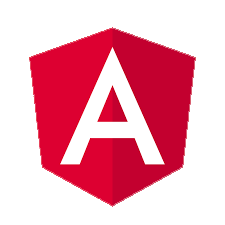

Open Source Tools for the Web
Brackets
Brackets is a lightweight, yet powerful, modern text editor. A pleasent blend of visual tools lets you get the right amount of help when you want it without getting in the way of your creative process. You'll enjoy writing code in Brackets.

Angular.js
HTML is great for declaring static documents, but it falters when we try to use it for declaring dynamic views in web-applications. AngularJS lets you extend HTML vocabulary for your application. The resulting environment is extraordinarily expressive, readable, and quick to develop.

Ember.js
Ember.js is built for productivity. Designed with developer ergonomics in mind, its friendly APIs help you get your job done—fast. Write dramatically less code with Ember's Handlebars integrated templates that update automatically when the underlying data changes.

WordPress
WordPress started in 2003 with a single bit of code to enhance the typography of everyday writing and with fewer users than you can count on your fingers and toes. Since then it has grown to be the largest self-hosted blogging tool in the world, used on millions of sites and seen by tens of millions of people every day.
Bootstrap
Bootstrap easily and efficiently scales your websites and applications with a single code base, from phones to tablets to desktops with CSS media queries. With Bootstrap, you get extensive and beautiful documentation for common HTML elements, dozens of custom HTML and CSS components, and awesome jQuery plugins.

GitHub
GitHub is a code hosting platform for version control and collaboration. It lets you and others work together on projects from anywhere.
Open Source Initiative
Who writes this code anyways?
The open source initiative is a global non-profit, The Open Source Initiative (OSI) protects and promotes open source software, development and communities, championing software freedom in society through education, collaboration, and infrastructure, stewarding the open source definition, and preventing abuse of the ideals and ethics inherent to the open source movement.
Licencing Open Source
How is intellectual property protected?
While there are over 50 different open source licensing options, here are the 3 most common.
1
Free-For-All
This licence only requires the licensees to give credit to the original authors. Derivative works can be made proprietary. These licenses are sometimes referred to as “academic licenses”. Free-for-all licenses don’t require authors to share code, which means a competitor can “take” the code and build a improved version of it
2
Keep-Open
In this case the final software has to be made available as open source. Meaning if you use other peoples code that was open source. You cant claim it as you own even though it contributes to your overall program.
3
Share-Alike
If the existing software is modified or extended, the result as a whole has to be made available as open source.The term copyleft is more commonly used to characterize this kind of license.
Why use Open Source?
Control
Open source lets developers look under the hood and see what the code is actually doing. It gives them complete control and allows them to only enable or disable certain features.
Education
Open source gives stumped developers a glimpse at how other developers solve problems. Open source allows them to pick through the code and find things that could be useful.
Stability
Many people prefer open source software to proprietary software for important, long-term projects. Because programmers publicly distribute the source code, users relying on that software for critical tasks can be sure their tools won't disappear or fall into disrepair if their original creators stop working on them.
Security
Many people prefer the security of open source software. The user can see exactly what the program is doing and confirm only the necessary tasks are being performed.